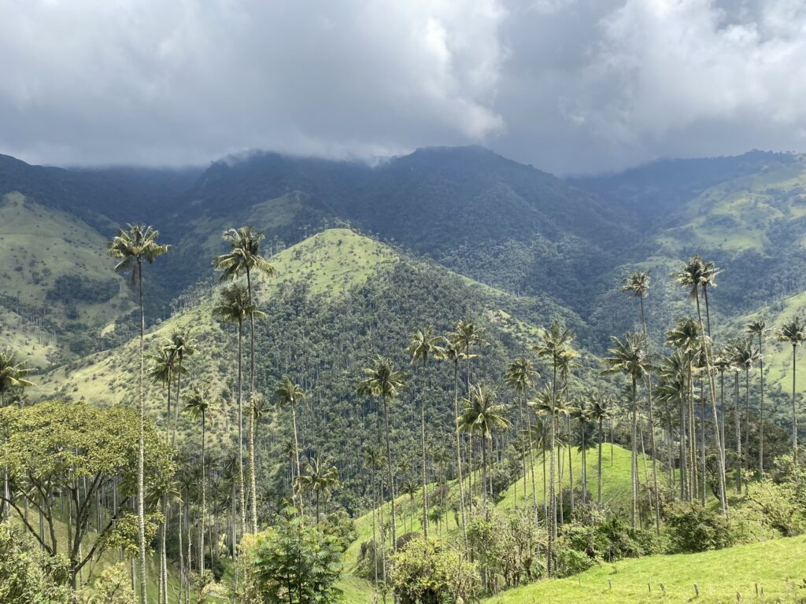
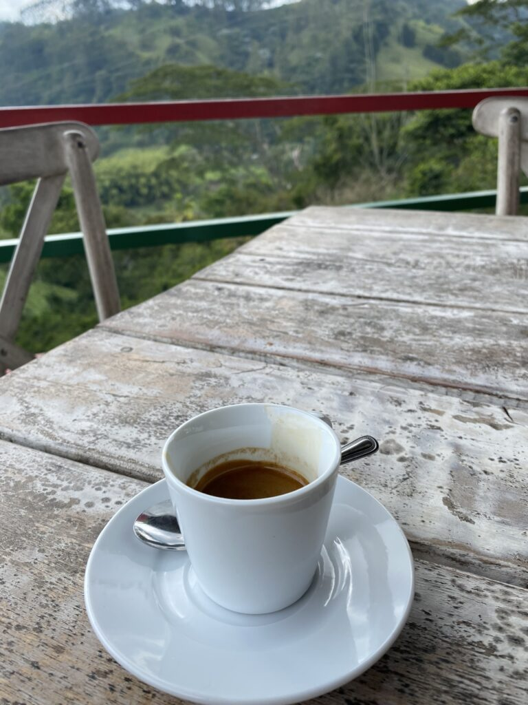
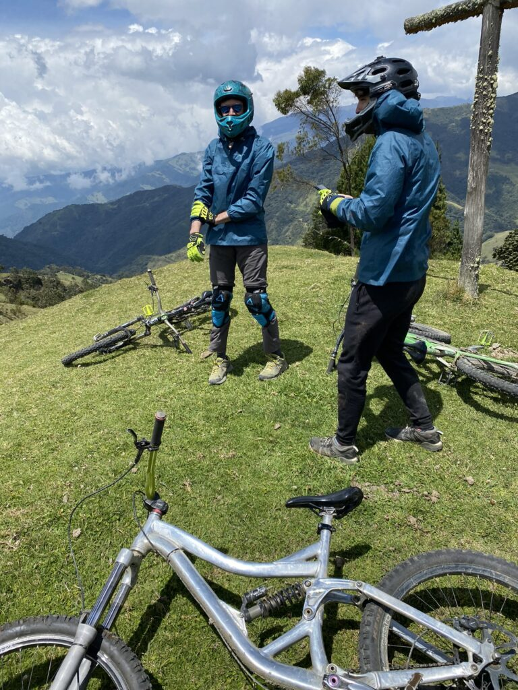
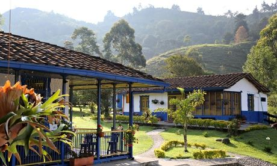

Wat een week niet kan brengen en wat kan de definitie van een week toch nietig worden verklaard. Van de dorpen naar de natuur en door naar de stad, waar de ongenadigde Salsa mensen wegduwt of volledig opslurpt. En dat alles niet zonder gevaar…
Na een intiem afscheid trekken de Denen naar het noorden, maar ik ben nog niet klaar met het zuiden. Ik kan de onweerstaanbare koffie-aroma’s honderden kilometers verderop al ruiken en zo word ik naar Salento gelokt. Ik verkies wederom een hostel buiten het dorp boven de soms toeristische centra, al heeft dat ook z’n nadelen. Als ik om 22:00 uur aan de rand van het dorp aankom, zijn de straten al redelijk verlaten en taxi’s niet te vinden. Ik besluit de paar kilometer ter voet af te leggen op een paadje dat volgens de kaart recht naar het hostel leidt. Grote fout. Het snel dalende pad wordt al gauw smaller en blijkt uiteindelijk een droge rivier te zijn. In het pikkedonker dwingen agressieve honden me al vallend verder te rennen terwijl ik stenen blijf gooien als enige verdediging. Als de beesten afgeschud zijn is een weg terug onmogelijk en blijf ik met zaklamp doorlopen in het dichte berggebied. Gladde stenen domineren het onregelmatige modderpad. Eindelijk bij de weg aangekomen, blijkt een groot herk versperring te bieden. Ik wurm me door de prikkels heen en kom dan via een veilige weg bezweet, onder de modder en met opengescheurde kleren bij het hostel aan. Mijn verwilderde uiterlijk doet wat wenkbrauwen fronsen, maar de plek blijkt een heerlijke thuisbasis om de omgeving uit de kammen.

Het zwarte goud
Koffie gaat voor en dus trek ik de volgende dag naar een boerderij ergens in de groene omliggende berggebieden. Na een zonnige hike bereik ik de plek waar je een tour kunt nemen op het grote landgoed. Ik struin tussen de koffieboonstruiken, kassen voor het droog- en fermentatieproces en de fabriek door. Het belangrijkste is natuurlijk het proeven en met verschillende filterapparten komen de aroma’s van rood fruit, honing, rode wijn en chocola op een intense manier vrij. Ik móet wel wat bonen voor thuis kopen en neem het meesleuren ervan op de koop toe.
De grootste trekpleister van de omgeving is de Cocoravallei en dat is logisch. Voor de drukte uit loop ik rond in het magische park vol waspalm, de nationale boom die het sprookjesbos vult met torenhoge stammen en klassieke toppen. De volgende dag zie ik er nog veel meer als ik naar 3400 meter word gereden in een jeep om vervolgens weer in volle vaart naar beneden te crossen op mountainbikes. Na alle hikes is de agressie van de sport heerlijk en de tocht wordt een wedstrijd tussen mij en twee Franse jongens die met ongelooflijke snelheden over het hobbelige pad vliegen. We doen ook een stukje extreme route door een bos met een stijle ondergrond en diepe afgronden. Het gaat telkens maar nét goed, maar iedereen komt ongeschonden beneden, inclusief de knetterstonede guides.



Glijdende schaal
Na een dag in een zonnige hangmat besluit ik toch maar naar Cali te gaan, waar ik weinig van verwacht, maar het dansleven aardig schijnt te zijn. Dat had ik onderschat. Alles blijkt bij aankomst gefocust op de Salsa, waarvan de polis de hoofstad is. Ik kom gelijk bekenden tegen die me meesleuren naar de eerste beste salsa-club. Zonder vaardigheden in de roestige Hollandse heupen zet ik menig dame voor schut op de dansvloer, maar ik moet me wel overgeven aan het ongemak van de bewegelijke cultuur. De pro’s overmeesteren de vloer en zetten in ongelooflijke snelheden hun voeten altijd op de juiste plaats terwijl ze schijnbaar moeiteloos improviseren. Het lijkt heel intiem, maar iedereen laat elkaar na een dans weer los en grijpt een volgende partner. Sommige nieuwkomers vluchten gelijk de stad weer uit, maar anderen worden verliefd op de dans en blijven weken tot maanden hangen.
Na een les de volgende dag zie ik opeens het plezier ervan in en snap ik de aantrekkingskracht. De nachten zijn lang, de ochtenden worden overgeslagen en na wat eten en een les lijkt de nacht alweer in te treden. De eindeloze stroom van muziek op hoog tempo, felle lichten, mensenmassa’s, alcoholwazen en andere prikkels zijn overweldigend en dwingen me in een ritme waar ik zelf weinig invloed meer op heb. Van dansscholen tot partybussen en clubs bewegen we in grote groepen door de stad, waar verder weinig te beleven valt tussen de armoedige wijken en gevaarlijke locals die ik soms maar net kan ontwijken, en soms niet. Een doorgeslagen man, een aanval, een achtervolging, een verweer, een vlucht. Even keek ik de ongrijpbare kilte van de onmenselijkheid in de ogen. Het is gelukkig niet het laatste wat ik meemaak.
De dans laat je falen, geeft kracht en grijpt de leiding over mijn leven. Totdat ik ontsnap.
Gegroet.